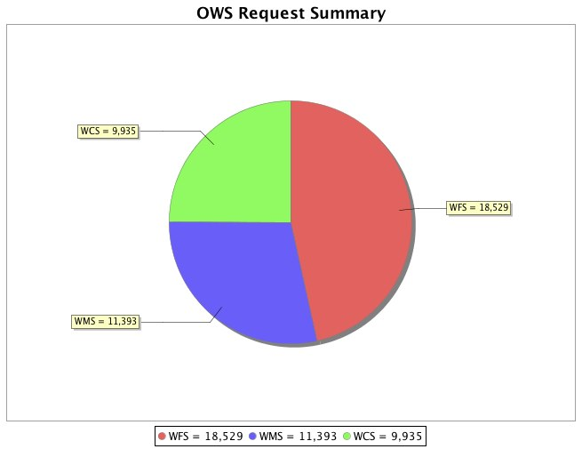

Monitoring Overview¶
The following diagram outlines the architecture of the monitoring extension:

Monitor extension architecture
As a request is processed the monitor inserts itself at particular points in the request life cycle to capture necessary data. That data is persisted to an external database:
ID | STATUS | PATH | START_TIME | ...
----------------------------------------------
1 | FINISHED | /wms | 2008-25-10 08:21 | ...
2 | FAILED | /wfs | 2008-25-10 08:22 | ...
3 | RUNNING | /wcs | 2008-25-10 08:25 | ...
The request data is made available through various reports:
Request report
Previous: Upgrading
Next: Monitor Configuration